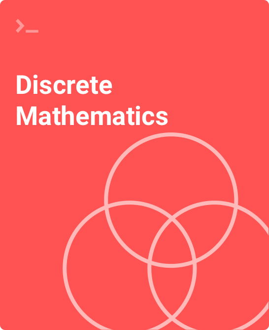

429 Ambrose Hall
kevinlillis.github.io
LillisKevinM@sau.edu
563-333-6429
I am in my office most days and my door is always open. Please feel free to stop in any time. You can also make an appointment to meet with me at a specific time. Here are my official office hours:
| Monday | 10:00 — 11:45 |
| Tuesday (virtual) | 10:00 — 11:30. A WebEx link will be available on Blackboard. |
| Wednesday | 10:00 — 11:45 |
This course provides an introduction to discrete mathematics as it is used in computer science. Topics include propositional and predicate logic, simple circuit logic, elementary number theory, sequences and summations, methods of proof (direct, by contradiction, by contraposition, by induction), set theory, graph theory, combinatorics, and discrete probability.
Upon completion of this course students will be able to:
This course addresses the Quantitative Reasoning and Information Technology General Education requirement. As such, students will use methods of mathematical inquiry to interpret data as part of the requirements for this course.
None
The class meets on Monday and Wednesday from 2:30 to 3:45 in room 413A of Ambrose Hall. The first day of class is Monday, 8/17 and the last day of in-person class is Wednesday, 11/18.
Due to the size of our class and the need to maintain social distancing, this class has been divided
into two groups, the Monday
group and the Wednesday
group. The group assignments are
available on Blackboard.
Monday group meets face-to-face in-seat on Mondays and the Wednesday group meets face-to-face in-seat Wednesdays. The same lecture and classroom discussions will take place on Monday and again on Wednesday. During the 4 days between Wednesday and Monday (Thursday, Friday, Saturday, and Sunday), the entire class will have online activities and homework to complete. These activities will be described on the class website and on Blackboard.
No food or drink is allowed in our classroom.
We may use technology for virtual meetings and recordings in this course. Our use of such technology is governed by FERPA, the Network Use Policy and SAU’s Academic Integrity Policy. Your instructor will not share recordings of your class activities outside of course participants. You may not share recordings outside of this course. Doing so may result in disciplinary action.
As stated in the Bee Safe, Bee Responsible Promise
, every Ambrosian will wear appropriate face
covering of the nose and mouth while in public, including during class and in common areas. All will
practice social distancing in group settings, unless the nature of the class requires closer contact and
appropriate personal protective equipment is being worn. Because a second wave of infections is a real
possibility, a contingency plan to return to distance delivery and close most campus services and
buildings can be enacted at the Cabinet’s discretion should conditions warrant.

We will be using an on-line, interactive text called a zyBook. To purchase the zyBook:
1. Sign in or create an account at www.zybooks.com/
2. Enter zyBook code: SAUCSCI281LillisFall2020
3. Click Subscribe
A class website has been created for this class. A link to the class website can be found at kevinlillis.github.io. Please check the class website regularly throughout the semester. I will use Blackboard to post grades and other sensitive material and as a place for you to turn in online assignments. All other course information will be provided through the class website.
You are welcome to email me questions. I will answer your e-mails as soon as I can. Make sure to include the course number in the subject to help me get to your e-mail quickly. I occasionally send e-mail to the whole class using your St. Ambrose address (@sau.edu). Be sure to check this e-mail account regularly so you don't miss anything important.
Your grade for this class is determined by the following:
| Midterm Exam | 15% |
| Final Exam | 15% |
| Quizzes | 15% |
| Assignments | 50% |
| Attendance | 5% |
Midterm Exam The midterm exam will be on Wednesday, September 30 at 2:30. This is an online exam administered through Blackboard. This will be an open book and open notes exam.
Final Exam The final exam will be on Monday, November 23 at 2:30. This is an online exam administered through Blackboard. This will be an open book and open notes exam.
Quizzes There will be several quizzes throughout the semester. Each quiz will be online through Blackboard and will be announced in advance. The lowest quiz grade will be dropped when computing your final grade for the class. Quizzes are open book and open notes.
Assignments Each assignment will be given a date and a time when it is due. Assignments must be turned on time.Assignments are not collaborative. Each student is expected to work independently to complete all work. Assignments turned in through Blackboard must be submitted as a PDF file. zyBooks assignments can be completed directly in the zybook.
Attendance Attendance is mandatory for in-class meetings. You are expected to attend all classes and to arrive on time. I will take attendance most days, but not every day. Your attendance grade is based on those days when I take attendance.
Letter grades will be assigned based on the following:
| Grade | Min Score | Grade | Min Score | Grade | Min Score | Grade | Min Score |
| A+ | 98 | B+ | 87 | C+ | 77 | D+ | 67 |
| A | 93 | B | 83 | C | 73 | D | 63 |
| A- | 90 | B- | 80 | C- | 70 | D- | 60 |
Exams Make-up exams will only be given in the event of an excused absence. You must notify me within 48 hours of a missed exam.
Quizzes Quizzes cannot be made up.
Homework Late homework assignments are not accepted. Once the due date and time have passed, the assignment is no longer visible on Blackboard and no further assignments are accepted.
You are encouraged to discuss homework and other parts of the class with fellow students. Such discussions about ideas are not cheating, whereas the exchange of finished, written answers is cheating. Never give finished answers to someone else or use someone else’s finished answers. Plagiarism and cheating are both considered grounds for a failing grade for that particular piece of work. Furthermore, they would weigh heavily in the final grade, possibly resulting in a failing grade for the entire course. Please see SAU's Academic Integrity Policy for further details.
Students with disabilities who believe that they may need accommodations in this class are encouraged to contact the Accessibility Resources Center (ARC) at 333-6275 as soon as possible to better ensure that such accommodations are implemented in a timely fashion. Students may also want to visit ARC on line at: www.sau.edu/Accessibility_Resource_Center.html.
Attend Class Showing up on time for every class is the easiest way to improve your grade — not merely because of the credit for attendance, but also because of exposure to the content presented in class.
Level of Effort Normally a student can expect to spend about two hours of work, outside of class, for each credit unit. Thus a typical expected workload would be about six hours per week outside of class. This is not a course where students read or write essays. Most of your time will be spent solving specific and detailed problems.
Prepare for Class Read the assigned material ahead of time for easier to follow the lecture and it will help you decide what to ask about in class.
Do the Homework Start working on the homework problems as soon as possible. Often, a problem that stumps you one day will seem obvious a day later. You should view the homework assignments as preparation for the exams. It is imperative that you understand and complete the homework.
Manage Your Time I encourage you to develop a system to actively manage your priorities and time. You should schedule time each week to complete assignments and to complete readings in advance of class. Effective time management will help you not only in this class but also in the rest of your studies and in your career. Poor time management and late completion of assignments will be detrimental to your learning experience and will be reflected in your grade for the class.
Stay Organized Organize your class notes and save all of your graded homework assignments. These will be a great resource when studying for the exams. Also be sure to keep your computer files organized. You will write a plethora of programs for this class; it is easy or them to quickly become disorganized.
Visit Me If you have problems during the semester that affect your coursework, please see me as soon as possible so we can discuss your options for the course. If you find yourself falling behind in the class, please see me. It is likely we can work together to get you back on track.
Ask for Help From the Source of All Knowledge There is a prayer written By St. Thomas Aquinas over 700 years ago. This prayer help me immensely when I was studying for my Ph.D. I thought it might help you in your studies as well. It is called the Prayer Before Study:
Creator of all things,
true source of light and wisdom,
lofty origin of all being,
graciously let a ray of your brilliance
penetrate into the darkness of my understanding
and take from me the double darkness in
which I have been born,
an obscurity of both sin and ignorance.
Give me a sharp sense of understanding,
a retentive memory,
and the ability to grasp things correctly and fundamentally.
Grant me the talent of being exact in my explanations,
and the ability to express myself with
thoroughness and charm.
Point out the beginning, direct the progress,
and help in completion;
Through Christ our Lord.
Amen.
~Saint Thomas Aquinas
| Week | Topic | |
|---|---|---|
| 1 | Mon 8/17 | Chapter 1, Logic |
| Wed 8/19 | ||
| 2 | Mon 8/24 | Chapter 1, Logic |
| Wed 8/26 | ||
| 3 | Mon 8/31 | Chapter 2, Proofs |
| Wed 9/2 | ||
| 4 | Mon 9/7 | Chapter 3, Sets |
| Wed 9/9 | ||
| 5 | Mon 9/14 | Chapter 4, Boolean Algebra |
| Wed 9/16 | ||
| 6 | Mon 9/21 | Chapter 5, Induction and Recursion |
| Wed 9/23 | ||
| 7 | Mon 9/28 | Chapter 5, Induction and Recursion |
| Wed 9/30 | ||
| 8 | Mon 10/5 | Chapter 6, Graphs |
| Wed 10/7 | ||
| 9 | Mon 10/12 | Chapter 6, Graphs |
| Wed 10/14 | ||
| 10 | Mon 10/19 | Chapter 7, Trees |
| Wed 10/21 | ||
| 11 | Mon 10/26 | Chapter 8, Introduction to Counting |
| Wed 10/28 | ||
| 12 | Mon 11/2 | Chapter 9, Advanced Counting |
| Wed 11/4 | ||
| 13 | Mon 11/9 | Chapter 10, Discrete Probability |
| Wed 11/11 | ||
| 14 | Mon 11/16 | Chapter 10, Discrete Probability |
| Wed 11/18 | ||
| 15 | Mon 11/23 | Final Exam |
| Wed 11/25 | ||